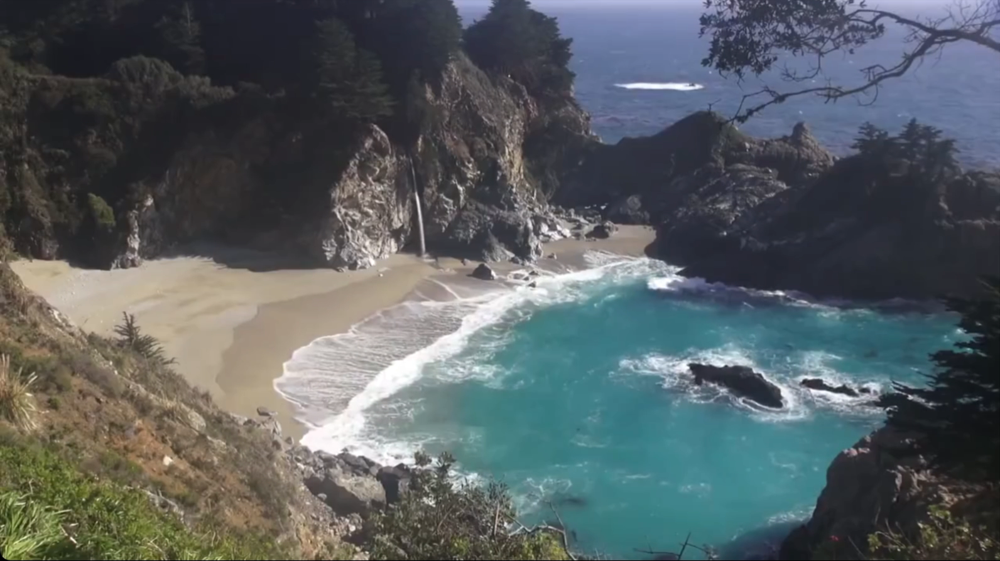
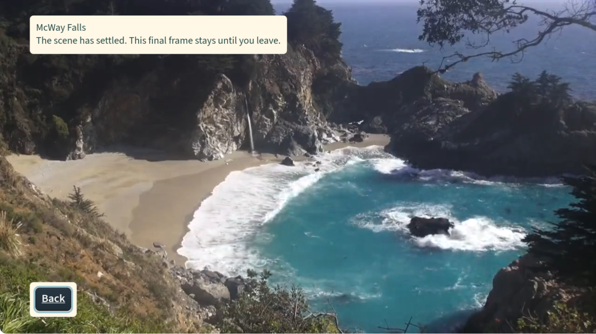

Offline reading copy. Historical observations retain their original scope and date. Draft proposals are not published changes; this rendering is not a new validation run.
Historical source excerpt copied from
docs/presentation/README.mdat13551e4. Local references now point to immutable source or bundled assets. Publication wording describes its original checkpoint, not current status.
Native app gallery and current evidence
These are existing Calm Frames app-only captures from the Vega Virtual Device on October 21, 2026. The source is the installed local ending-bounds fix, 60c3bbb701081c37dbd87a6b1f5b66d51a74b855. They are not browser mockups or generated UI.
| Home | Title details |
|---|---|
 |
 |
| Ocean and Forest remain visible; Watch is the primary action. | The title states its duration and ending before playback starts. |
| Native playback | Corrected final-frame hold |
|---|---|
 |
 |
| A frame from the actual native recording, not a separately substituted source frame. | The final picture keeps its bounds; the message and Back button remain visible. |
What the images establish
The images show the real native layout and selected states, including the corrected final-frame bounds. The earlier session also observed full-duration playback, pause/resume and Back. A still image cannot establish motion cadence, complete audio quality, precise protective-cover timing, or individual comfort. No physical-TV or full VoiceView acceptance is asserted.
The capture system missed some static UI changes in its continuous recordings. The Details and ending images here are independent app-only screenshots taken after those states rendered. They are not presented as frames from one uninterrupted walkthrough. The playback image was extracted from an existing native recording before this presentation task; this task did not open, change or encode any MP4.
The only image transformation is an exact rectangular crop: remove the simulator titlebar, right-hand remote and unused black area. There is no resizing, retouching, color adjustment, UI replacement or compositing. The original image hashes, crop rectangles and resulting hashes are in capture-provenance.json. Pixel comparison against the original captures confirms every crop.
Build and publication status
This table records the installed build and the pre-publication checkpoint. The ending fix is an ancestor of this presentation revision. The current remote branch head must be checked in GitHub or with git ls-remote; the historical remote value below is not a live status badge.
| Item | Status at this presentation checkpoint |
|---|---|
| Installed source | Local commit 60c3bbb701081c37dbd87a6b1f5b66d51a74b855 |
| Remote candidate before this publication pass | 677e53935e140204c404ae80502361040b5e09bd on private branch claude/ocean-layout-fix-2026-10-19 |
| Current package | aarch64 Debug, 132,557,605 bytes; identity/architecture and strict packaged-media validation passed |
| Package SHA-256 | 207898aa14d8659760348a716b825fabab83afd8e3b9431f9387202cc10e7163 |
| Ending-fix checks | Two targeted suites, ten tests passed; TypeScript and focused lint passed |
| Earlier full source baseline | The McWay activation receipt records the full-suite baseline and exact media verification. It predates the ending-bounds fix and contains historical installation status. |
| Native observations | Installed app, full scene duration, pause/resume, Back and corrected ending picture observed in the prior session |
| Audio | Native capture contains app audio; final subjective audio and edited-demo acceptance remain open |
| Public video | No confirmed published URL; local cut is under separate review |
| Devpost | No confirmed submission receipt |
| This presentation pass | README/docs/assets only; prepared for publication to the existing private candidate branch |
Copied local evidence (the TypeScript log has trailing blank lines removed): package identity, targeted tests, TypeScript, focused lint. The empty focused-lint output is normal for a successful silent command; it is not a full lint-suite report.
The source baseline and native checks were already completed before this documentation task. No test counts here are new measurements from this presentation pass. No green hosted CI status is implied for the local ending fix or the new presentation.
Media credits
McWay Falls footage and extracted still: MoneySavingVideos, ♥♥ Relaxing 3 Hour Video of a Waterfall on an Ocean Beach at Sunset.
- Source: Wikimedia Commons description and provenance.
- License: Creative Commons Attribution 3.0 Unported, rechecked on the source page for this presentation.
- Changes to the prepared edition: first five-minute excerpt, downsampled to 720p, H.264/AAC encoding, three-second fade of source audio at the end, extracted final-frame still.
- Changes to these native screenshots: crop to the app picture area only. The UI is part of the captured app. No creator endorsement implied.
Other visible title art: NPS Video, Acadia National Park; NOAA Fisheries; NPS: G Litten for Prairie Creek and Redwood. Their source URLs and individual terms are preserved in media/LICENSES.csv and NOTICE. No agency endorsement implied.
The architecture illustration is original project documentation and follows the code license. Its layout, colors and fonts match the existing Calm Frames interface. The overall README organization follows the user's Tideline reference, without copying Tideline screenshots or product claims.